“我说你好笨.”
“… 啊?”
楔子
现在已经十二点四十五了, 一月六号. 大概一个小时前, 我们的胡美女已经睡觉了, 睡前她还放出狠话说: 谁不睡觉谁小狗 😡. 呜呜, 好怕呢~
不过我睡不着啊. 于是就有了这篇文章.
那天我们在干嘛
据我所知, 那天Pepper被叔叔叫起床, 然后吃早餐🍞… 放假啊, 九点不到啊. 知道这件事首先应该先好好嘲笑一番安慰一下, 于是我说 以后我要监督你睡觉 (因为前一天某人睡得很晚啊; 我也从未想过这句话会被某人拿来反驳我, 可恶). 于是我们两个人在一顿挣扎后, 起床了. 关于为啥我们睡那么晚emm… 我去翻了一下聊天记录

又是一段可以讲很久的故事呢.
然后应该就到了中午, 给她分享了午餐, 翡翠珍珠白玉汤白萝卜汤
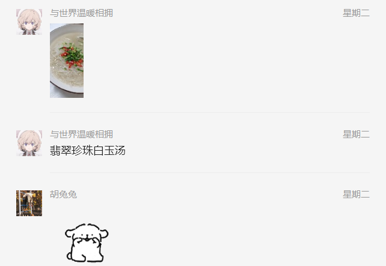
哼, 敷衍
今天开始准备给她傲娇一下
呵首先某人要去玩是吧, 好啊还自称胡漂漂是吧, 那我回礼貌一点吧, 语出不惊, 但杀伤力应该还挺大的

哼, 突然的礼貌肯定让你困惑然后措手不及, 来关注一下我美味的翡翠珍珠白玉汤. 但是
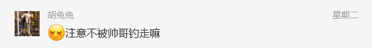
❔ 不是, 你这样我就急了, 我要说啥啊救命, 我不能输给这个人. 哼钓呗, 谁钓到谁走运, 反正我不钓就不钓, 关我啥事是吧 😴

那以后发生的事情与我无关了, 你自己看着办, 看你回来怎么安慰我吧.
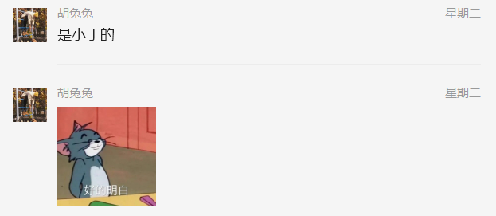
❔ 啊啊啊啊, 这是何方神圣, 小丁? 应该是朋友吧, 希望是朋友吧, 肯定是朋友吧.
眼不见心不烦, 有啥好烦的, 别人和朋友去看电影罢了. 好不容易转阴了, 应该的嘛对不对. 啊不过确实小烦, 相比之下我每天呆在这一点点大的房间里面, 一坐就是一天, 确实难受. 找不到人出去玩啊呜呜.
狗勾
大概不知道过了多久, 我只觉得有一万年.
然后耳机里面突然 叮咚, OMG老天爷, 她还记得我啊. 然后我开开心心点开看, 当然我要尽量表现得稳重平淡以及带有一丢丢的小情绪.
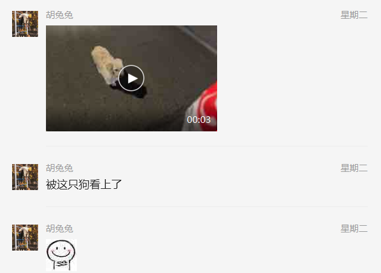
❔ 您真的没有意有所指吗
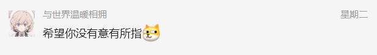
至少我有点尬. 不知道这个铁石心肠的人知不知道. 然后那只小狗勾确实跟了一路啊, 又是过马路, 又是等的. 我真很同情, 要是我我直接带回家了. 但是问题所在就是, 我怎么看怎么像我啊救命. 这个女人为了试探那只可怜无助弱小的小狗勾, 她躲起来了. 然后那只小狗没看见她, 就趴着等她出现, 等啊等. 有人好像忘了有一只小狗在她, 在那里拍照. 狗勾走了. 虽然最后又找到她, 不过最后还是走了捏. (草, 怎么和我一模一样啊). 于是我说
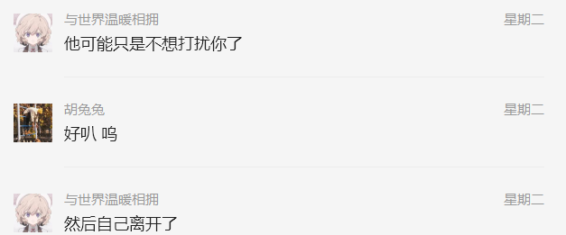
她说她有点愧疚 (啊你还知道愧疚啊~)
❌ 不对, 不对. 不是愧疚, 首先你没有欠它任何东西, 也没有亏待它, 它自己找上来的. 不过后来好像你也挺喜欢它的是吧 (比如想买香肠之类的). 后来呢, 小狗来了, 又走了, 啥也没说就走了, 但是你香肠也还没买呢.
🐶 : 这个人类要回家了嘛汪~ 好像不太喜欢我跟着呢汪~ 那我先走了吧汪汪~
👩 : 啊小狗走了呢, 我还想买香肠来着, 但是它又没有跟着我了, 我再买是不是不太好, 它会不会不要啊…
所以最后是双方都误解了对方. 有一个词语叫做 遗憾, 胡美女可以学一下.
我告诉她这或许叫遗憾更加贴切吧~ 然后这个人突然就开始
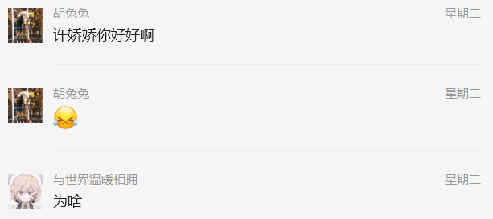
你这样让我很害怕, 不过暧昧了这么久也习惯了, 那就让我来试探一下 😏
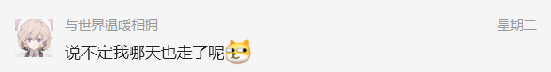
不过感觉确实是我想多了
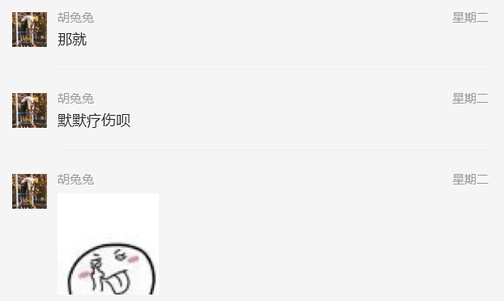
哎呀别人都没这意思, 都不带挽留的. 不过也庆幸一下还好没有像上次那样冲动, 不然差点连朋友也做不了了.
于是许某靠在椅子上长呼一口气, 就这样吧, 她也说过要遇见 对 的人, 我也要慢慢等, 马上21岁的人了是吧, 那么急干嘛. (无奈.jpg, 想开.jpg)
尴尬尴尬尴尬
试探结束, 看完课准备去提瓦特旅行一下. 然后突然问我为啥不说话 ❔ 我还能说啥, 没啥好说的嘛. 感觉没啥要说的了啊
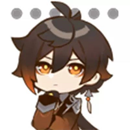
我大概知道自己应该没啥重要的, 估计就是这个人觉得没啥意思了就不会理我了. 然后她嘛, 她应该也是这个意思吧. 对啊, 聊完了啊. 还要说啥啊救命… 咳咳, 不急, 先可爱一下
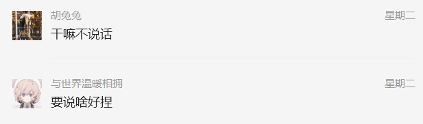
没想到啊没想到, 都这么直球的吗, 我阅历这么丰富, 下一句应该是 好吧 吧, 哪有这样问的啊救命
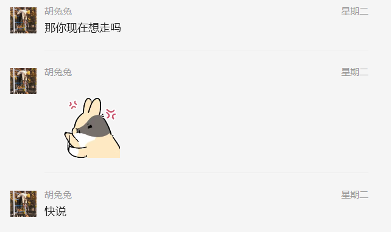
我肯定不走啊, 我走了我每天和谁聊天啊对吧, 那我提瓦特不就又少了一个小萌新, 而且这样的话以后不是挺尴尬的啊, 还得一起学模电呢, 不行我不能走啊, 这每天发癫这么好玩
然后这个人不知道为啥, 给我发了一张截图 啊你要干嘛
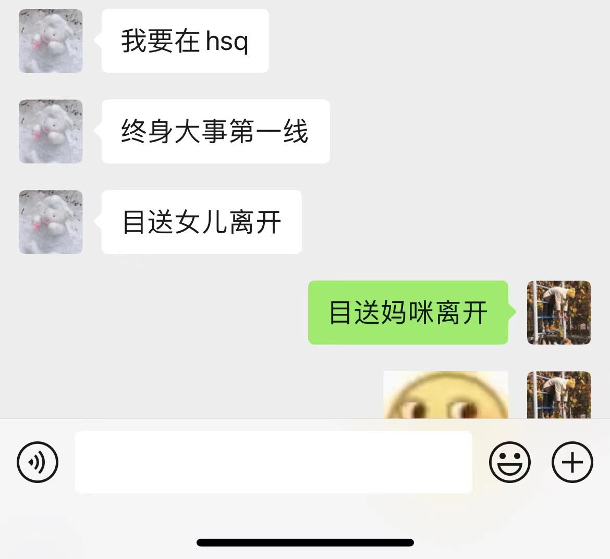
好吧, 看来上一轮聊天应该结束了, 无事发生, 现在这个人应该又要开始分享她的日常了吧 😕 这就是那个小丁同学吧. 嗯看来她们关系不错啊. 但是为啥现在发啊, 啥终身大事, 啥第一线. 然后你说要目送她离开, 所以我推理出了如下小剧场:
首先嘛, 俩姐妹出去玩, 免不了八卦一下. 然后胡同学呢就肯定提到了某人, 然后那个好姐妹应该就开开玩笑说 哎呀我要站在你终身大事的第一线, 这时候胡同学赶紧辟谣 哎呀就很好的朋友啦, 别想多啦~ 所以才回复她 目送妈咪离开
嗯就是这样
加上现在心如止水, 也不想多想啥, 没啥幻想了已经. 不想回她. 啊不过没过一会儿, 她看我没回她, 就问我在干嘛. 然后我就告诉她我在无聊. 诶嘿, 生气了, 好耶.
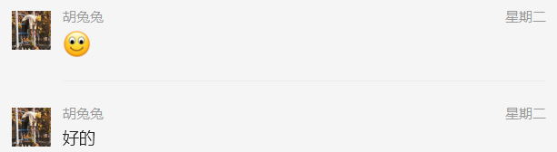
不过转念一想, 人家今晚玩得那么开心, 不能因为我就坏了一晚上的情绪啊, 还是拯救一下现在尴尬的局面吧…
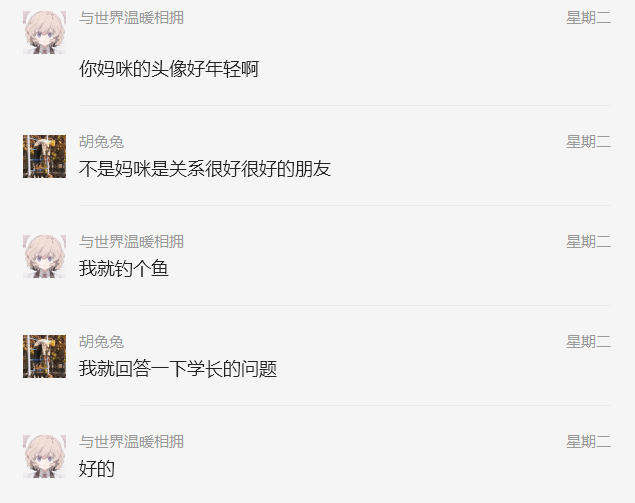
emmm…不过好像更加尴尬了呢… 😆
慌的一批
其实那天晚上也没玩游戏了后来. 因为感觉晚上一玩, 如果她在线, 肯定会玩到很晚, 她第二天一般八九点就醒了, 不能耽误别人睡觉. 好像我是在看书还是干啥啊. (我怎么记得我好像就是在玩游戏啊救命) 总之十二点多钟还没有睡觉就是了. 在等她说晚安呢, 然后给她回一个晚安就睡觉 (也不知道为啥, 上周开始说晚安了, 是 晚安安, 是的, 可爱捏 😊 )
果然, 十二点二十
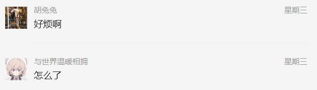
哎呀年轻人, 大晚上小小emo一下很正常, 所以是咋了捏
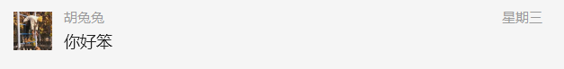
😇
这是咋了, 大晚上的.(不过感觉还挺甜的呢嘻嘻) 然后问她为啥, 是不是就是无缘无故想给我来一拳之类的. 她又把那个聊天记录截图拿过来问我 您怎么理解啊~(超凶)
❔ 我我我我是不是出息了? 不会是那个意思吧, 不会吧不会吧.
冷静冷静, 说不定又是睡前小小的暧昧呢. 这我熟. 先装个傻.

好像没答到点上啊兄弟们!! 那是不是说 ❗ 是不是说 ❗ 不会吧不会吧啊啊啊, 这是在干嘛啊
不行, 我不太相信啊, 再补个刀试探一下吧嘿嘿
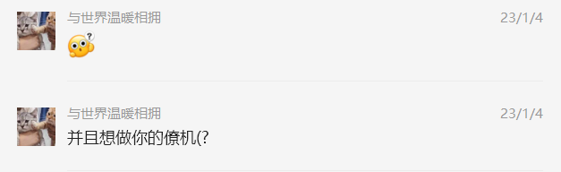
(感觉自己好贱啊哈哈哈哈哈 😍) 好的那个人又 不出所料 地说我笨了. 说我 笨死了 (哈哈哈哈) 结束吧结束吧, 这一part差不多了 – (我天真地想到)
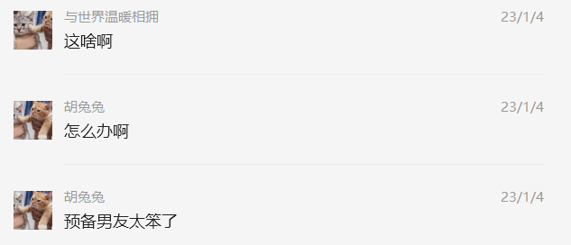
❔
❔
❔
然而此时我的第一反应是 这预备男友谁啊
草, 好像是我
我在做梦吧我在做梦吧我在做梦吧我在做梦吧我在做梦吧我在做梦吧我在做梦吧我在做梦吧我在做梦吧我在做梦吧我在做梦吧我在做梦吧我在做梦吧我在做梦吧我在做梦吧我在做梦吧我在做梦吧我在做梦吧我在做梦吧我在做梦吧我在做梦吧我在做梦吧我在做梦吧我在做梦吧我在做梦吧我在做梦吧我在做梦吧我在做梦吧我在做梦吧我在做梦吧我在做梦吧我在做梦吧我在做梦吧
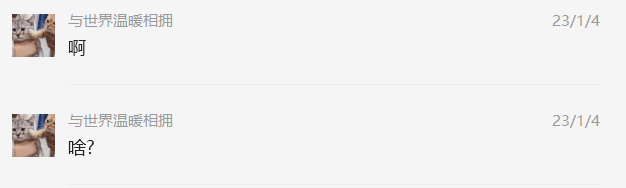
睿宝你的套路呢你的情话呢你的表白呢
我是谁我在哪我在干嘛现在是什么情况啊
啊啊啊啊

啊所以我要说啥啊!

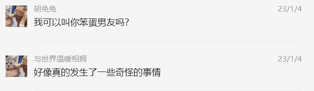
介绍一下, 这是我女朋友
在发生一些不可名状的莫名其妙的对话以后, 我发现我好像真的脱单了.
笑死, 我一直以为前面真的就是暧昧来暧昧去的, 差点就准备打算保持这种不清不白的关系直到毕业了.
之前第一次太冲动了, 直接和你说喜欢. 自己其实也没有抱希望, 可能是当时心情和状态确实很差吧, 然后身边有一个这样一直给我希望的人, 对啊, 只要想起你, 就会联想到所有关于美的幻想.
但是我不想引起你的注意, 就这样静悄悄地看着你, 然后和你说几句话, 略有遗憾, 但也很满足和开心了. 被理所应当地拒绝以后, 我也在想, 或许这个就是欣赏啊, 我是不是想多了啊, 哎呀又自作多情了. 于是我开始尽力阻止在日常见面的时间, 对, 只要我见不到你, 我就会忘了, 然后一切又恢复得像水一样平静.
想啥呢 ❔
你明明第一眼看她的时候你就知道
你肯定绕不过她
你明明在那次团建里面喜欢上了她
你就这样放弃吗
然后那天你找到我, 甚至直接就坐我旁边了, 我直接吓一跳. 反正我心想, 出事了, 找我谈正事了. 于是我就清楚地知道, 我在你心里扮演的角色是一个不可或缺的挚友, 很多心里话都可以一起说, 并且很难遇见我这样聊得来的人, 所以希望以后还能像以前一样聊天, 散步.
嗯, 好
可是我不能接受被我爱的女生当作好闺蜜. 而我又不能越界, 因为我爱你.
… 学校突然的回家通知有点措不及防, 昨天还在赶实验报告的你第二天就准备走了. 走的那天我刚好去校医院搬口罩, 遇见了正在等车的你. 啊就要走了吗. 我赶紧回去把口罩放下, 自己又出来, 看看你还在不在, 然后跑过去和你打个普普通通的招呼, 嘿戳你一下, 然后头也不回假装要去某个地方有事情. 走到了一个自以为你看不到的地方后, 发现接驳车来了. 完了, 我是不是还要再回去一次啊, 我刚刚看都没看一眼, 笨死了. 于是我又回去和你对视了一下. 嗯, 明年见~
我是第三天清晨的高铁, 不敢睡觉, 凌晨收拾行李, 那时候一个人的寝室, ipad外放了一个晚上的歌. 虽然知道没人会在那个时间找我, 但我还是打开微信, 然后看一下, 又放下手机. 我会想到你第一次踏上大草坪, 快乐地转圈哈哈哈; 我会想到在湖边的树下我们留下了一个小纸条; 我会想到被路灯映成金黄的树叶和比遥远更遥远的深蓝色的天空, 像你的眼睛; 我会想到你引以为傲的红围巾和舒适的香味. 随便想了一下, 发现行李才收拾了一半.
放假了, 见面的时间会更短了. 平常就微信聊聊吧, 每天关心一下对方不要🐑了, 如是而已. 不过有一天, 你应该是不想写了, 然后来找我:
不再聊会?
你不会和我聊
明明是你不想聊
我每次都秒回好吧
…
不聊就不聊
那你要聊啥, 明明是你准备睡觉了
可是我还在等我的热水袋子
所以来找我打发时间 (微笑.jpg)
…
我现在没啥想分享的
(然后我还是去找了那天的素材拿来给你分享一下)
…
热水袋子好啦, 睡了啊, 早点睡
(不开心) 没有下次了
没有下次什么
再等你我是🐶
第二天我一直没有理你, 也看见你给我发了你煮饺子, 不想理你. 直到晚上九点翻了一下pyq (应该是下面这个意思吧)
发烧
一觉醒来
那个人还没来关心我
完了, 我赶紧去找你, 但是我能做啥啊, 我啥也不能做, 我只能各种叮嘱各种喝热水. 希望我的关心没有来迟吧.
要是我不发pyq, 你会一天都不来关心我吗
不是有那么多人关心你吗
没有你的
真的假的? 我当时怀疑你喜欢我, 我觉得不对吧, 可能是我没有尽到挚友这个沉重的责任吧. 后来我不敢随便不理你了, 我也知道就算是朋友, 我也要好好担起朋友的这个责任. 只是感觉有点难受, 但是总比永远失去会好很多吧.
所幸
我以后会以男朋友的身份, 照顾我家的小可爱~
- Post title：Rey-那我们开始吧
- Create time：2023-01-05 11:15:45
- Post link：2023/01/05/life/begin-Rey/
- Copyright notice：All articles in this blog are licensed under BY-NC-SA unless stating additionally.